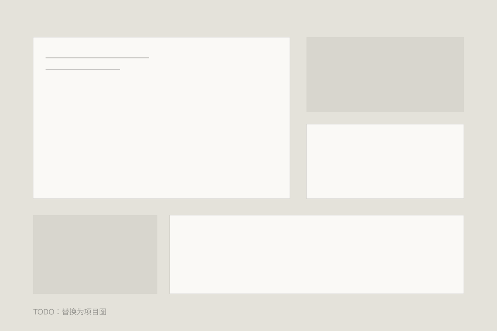

为什么需要一张首页
当待办、笔记和工具各有一套入口，最耗费心力的往往不是执行，而是反复寻找上下文。驾驶舱的出发点，是让今天最重要的事、当前进展与下一步行动在同一处相遇。
这张首页应该回答什么
今天要推进什么？哪些事情在等反馈？一个状态的依据在哪里？每个模块都应能回到原始入口，而不是只给一个看似完整的数字。
可以先借走的思路
不用先搭一整套系统。先用一张纸，写下当前最重要的一件事、等待中的事项和下一步动作。连续使用一周，再决定哪些内容值得自动化。
开放边界
目前展示的是项目说明，不是可在线使用的驾驶舱。源码与安装包尚未开放；私人工作、身体状态和真实业务数据不会随网站公开。